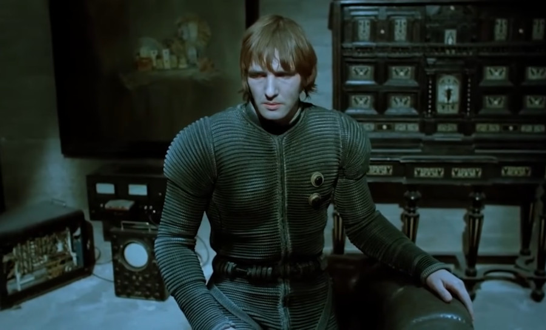

Thoughts on Fractran
Reduction & Catalysts
Conway's Fractran traditionally compares the accumulator against reduced fractions, but computationally-speaking, getting to the gcd of a fraction does little more than getting rid of otherwise valuable information used during comparison to match against a restricted set of fractions. The support for catalysts, symbols found on both sides of a rewrite rule, makes for a simpler and faster implementation.
:: 15/6 red green > blue green :: 5/2 red > blue red green
These two fractions are not equal and reducing the first into the
second, eliminates the capability to match against it only when the
catalyst green is present in the accumulator.
Deadcode Elimination
An unreachable rule is created when a rule's left-hand side is part of the left-hand side of a rule below it:
:: foo > baz :: foo bar > baz foo bar
For a rule to be reachable, all the symbols in the left-hand side must be present in either the right-hand side of an other valid rule, or in the accumulator.
:: violet > red :: purple > violet violet
Rules that are unreachable are considered comments and should not be part of the ruleset during evaluation.
Exhaustive Rules
When moving values between registers, each move takes one rewriting and thus can quickly become computationally expensive:
:: a > res :: b > res AC 1000, a^3 b^3 00 1000 × 3/2 = 1500, a^2 res b^3 00 1500 × 3/2 = 2250, a res^2 b^3 00 2250 × 3/2 = 3375, res^3 b^3 01 3375 × 3/5 = 2025, res^4 b^2 01 2025 × 3/5 = 1215, res^5 b 01 1215 × 3/5 = 729, res^6 Completed in 6 steps.
A rule with a right-hand side that does not include symbols present in any of the left-hand sides of the rules above it can be run exhaustively and perform many applications without having to look for the next applicable rule:
AC 1000, a^3 b^3 00 1000 × 3/2 = 3375, res^3 b^3 01 3375 × 3/5 = 729, res^6 Completed in 2 steps.
Reversibility
Fractran operators are reversible, meaning that a some programs can run backward to their original state. Evaluation is undone by applying rules and inverting their numerator and denominator, or right and left sides.
AC 19, fruit-cake 02 19 × 119/19 = 119, apple-cake fruit-salad 01 119 × 715/17 = 5005, apples apple-cake oranges cherries 00 5005 × 30/7 = 21450, apples apples flour sugar oranges cherries
For a program to be reversible, two rules may not share identical numerators or denominators. The implementation of a reversible CNOT logic gate differs from the non-reversible logic gates in that we cannot rely on the absence of registers, rules must contain symbols for their absence:
:: c+ t+ cnot > c+ t- cnot :: c+ t- cnot > c+ t+ cnot :: c- t+ cnot > c- t+ cnot :: c- t- cnot > c- t- cnot

Implementation
A basic implementation of the runtime core is a mere 20 lines:
#include/* cc framin.c -o framin && ./framin */ #define num 0 #define den 1 int main(void) { long src[] = {55, 77, 13, 11, 546, 195, 11, 39, 13, 65, 1, 13, 0, 0}; long *f = src, acc = 131625; // x^4 y^3 mul while(f[den]) if(acc % f[den]) f += 2; else acc = acc * f[num] / f[den], f = src; printf("%ld\n", acc); // r^12 return 0; }
A Stack Machine
A stack-machine can be implemented in Fractran, by allocating a number of registers to store the items in the stack. We can push a value stored in x to the top of the stack by shifting the content from one register to the next.
:: push > move-de :: move-de d > move-de e :: move-de > move-cd :: move-cd c > move-cd d :: move-cd > move-bc :: move-bc b > move-bc c :: move-bc > move-ab :: move-ab a > move-ab b :: move-ab > move-xa :: move-xa x > move-xa a :: move-xa > :: a) > push x^1 b) :: b) > push x^2 c) :: c) > push x^3 a)
In that same way, we can pop, and store in x, the value at the top of the stack by shifting content the other way.
:: pop > move-ax :: move-ax a > move-ax x :: move-ax > move-ba :: move-ba b > move-ba a :: move-ba > move-cb :: move-cb c > move-cb b :: move-cb > move-dc :: move-dc d > move-dc c :: move-dc > move-ed :: move-ed e > move-ed d :: move-ed > a^1 b^2 c^3 pop
incoming: rejoice devlog fractran devlog